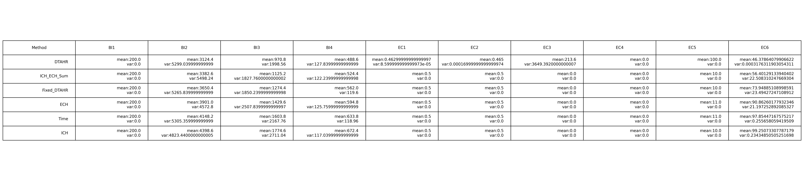
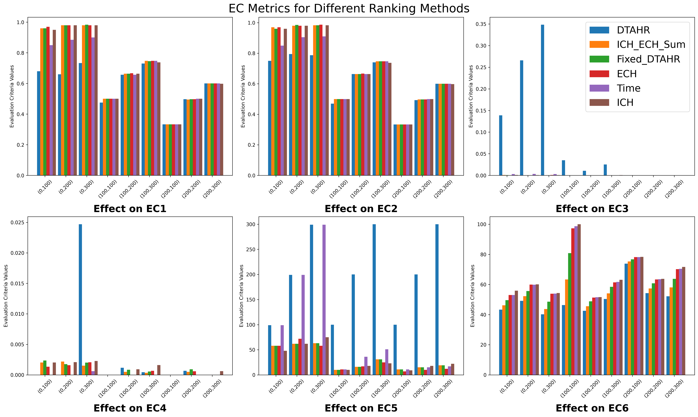
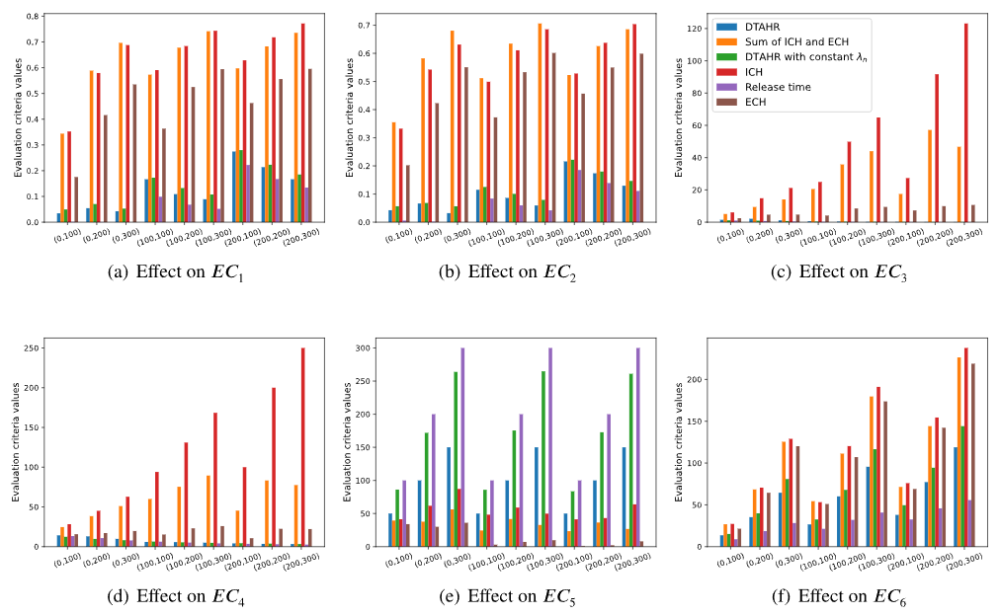

the python programme of mock_rank
- Basic Information (BI1~4):
- BI1: The total number of reviews.
- BI2: The total number of votes (helpful votes) on the reviews.
- BI3: The total number of replies to the reviews.
- BI4: The total number of negative replies to the reviews.
- Evaluation Criteria (EC1~6):
- EC1: The percentage of reviews with 0 votes.
- EC2: The percentage of replies with 0 replies.
- EC3: The average time for new reviews to obtain one vote.
- EC4: The average time for new reviews to obtain 10 votes.
- EC5: The number of changes of reviews in the top 20.
- EC6: The variance of voting distribution.
Evaluation criteria values of each ranking strategy.

The effects of ranking strategies in different combinations of NR1 and NR2

Compared to the picture in the paper

Deficiency
due to the deficiency of data collection, the results is not that accurate.
but the difference between the metrics can still be told out.